Last updated: 2026-08-31
Checks: 7 0
Knit directory: data_analysis/
This reproducible R Markdown analysis was created with workflowr (version 1.7.2). The Checks tab describes the reproducibility checks that were applied when the results were created. The Past versions tab lists the development history.
Great! Since the R Markdown file has been committed to the Git repository, you know the exact version of the code that produced these results.
Great job! The global environment was empty. Objects defined in the global environment can affect the analysis in your R Markdown file in unknown ways. For reproduciblity it’s best to always run the code in an empty environment.
The command set.seed(20260612) was run prior to running
the code in the R Markdown file. Setting a seed ensures that any results
that rely on randomness, e.g. subsampling or permutations, are
reproducible.
Great job! Recording the operating system, R version, and package versions is critical for reproducibility.
Nice! There were no cached chunks for this analysis, so you can be confident that you successfully produced the results during this run.
Great job! Using relative paths to the files within your workflowr project makes it easier to run your code on other machines.
Great! You are using Git for version control. Tracking code development and connecting the code version to the results is critical for reproducibility.
The results in this page were generated with repository version 841b863. See the Past versions tab to see a history of the changes made to the R Markdown and HTML files.
Note that you need to be careful to ensure that all relevant files for
the analysis have been committed to Git prior to generating the results
(you can use wflow_publish or
wflow_git_commit). workflowr only checks the R Markdown
file, but you know if there are other scripts or data files that it
depends on. Below is the status of the Git repository when the results
were generated:
Ignored files:
Ignored: .DS_Store
Ignored: data/.DS_Store
Untracked files:
Untracked: code/minnd_gene_program_analysis.R
Untracked: fsusie_pc_kegg_flash_batchrm.RDS
Note that any generated files, e.g. HTML, png, CSS, etc., are not included in this status report because it is ok for generated content to have uncommitted changes.
These are the previous versions of the repository in which changes were
made to the R Markdown (analysis/minnd_gene_program.Rmd)
and HTML (docs/minnd_gene_program.html) files. If you’ve
configured a remote Git repository (see ?wflow_git_remote),
click on the hyperlinks in the table below to view the files as they
were in that past version.
| File | Version | Author | Date | Message |
|---|---|---|---|---|
| Rmd | 841b863 | Lifan Liang | 2026-08-31 | wflow_publish(c("analysis", "docs", "data")) |
| html | 841b863 | Lifan Liang | 2026-08-31 | wflow_publish(c("analysis", "docs", "data")) |
| html | 2736ba1 | Lifan Liang | 2026-08-17 | Build site. |
| Rmd | ee7b86a | Lifan Liang | 2026-08-17 | wflow_publish(c("analysis", "docs", "data")) |
| html | ee7b86a | Lifan Liang | 2026-08-17 | wflow_publish(c("analysis", "docs", "data")) |
| html | a6efd1d | Lifan Liang | 2026-08-17 | Build site. |
| Rmd | f5102b0 | Lifan Liang | 2026-08-17 | wflow_publish(c("analysis", "data", "docs")) |
| html | f5102b0 | Lifan Liang | 2026-08-17 | wflow_publish(c("analysis", "data", "docs")) |
| html | d71e56a | Lifan Liang | 2026-07-01 | Build site. |
| Rmd | 7a63422 | Lifan Liang | 2026-07-01 | wflow_publish(c("analysis", "docs", "data")) |
| html | 7a63422 | Lifan Liang | 2026-07-01 | wflow_publish(c("analysis", "docs", "data")) |
| html | 9c953b9 | Lifan Liang | 2026-06-30 | Build site. |
| Rmd | 006fbd0 | Lifan Liang | 2026-06-30 | wflow_publish(c("analysis", "docs", "data")) |
| html | 006fbd0 | Lifan Liang | 2026-06-30 | wflow_publish(c("analysis", "docs", "data")) |
We obtained the pseudobulk sample that have been processed by Christina. Each sample is the sum of read count for each gene for all cells within a sequencing batch and a perturbation (including NTC). There are 107 genes targeted for Loss of function knockdown. These genes were divided into 5 gene sets. Each genes sets were perturbed and sequenced in three to four batches. After removing lowly expressed genes, we applied TMM to estimate the normalization factors.
Then we estimate the mean-variance trend of the pseudobulk count matrix while controlling for the batch effects as mixed effects. The estimation error was preserved as input for the downstream factor analysis.
Finally, we used limma::removeBatchEffect to remove
batch effect while keeping the design matrix. The resulting matrix of
log CPM values for 20107 genes and 402 pseudobulk samples was used for
downstream analysis.
The preprocessing code is shown as below:
library(limma)
library(edgeR)
library(dream)
#### Run raw count data
load("metadata_per_celltype.Rdata")
load("GABA_raw_counts_geneset1to5.Rdata")
dge <- DGEList(counts = GABA_counts, samples = GABA_meta)
# Remove lowly-expressed genes and apply TMM
keep <- filterByExpr(dge, group = GABA_meta$Loss_of_function)
dge <- dge[keep, , keep.lib.sizes = FALSE]
dge <- calcNormFactors(dge, method = "TMM")
# Compute CPM after interpolating the mean-variance trend and
form <- ~ perturbation + donor + (1|seq_batch) + (1|seq_batch:culture_batch)
vobj <- voomWithDreamWeights(dge, form, meta)
# Remove batch effects as fixed effects while keeping the design matrix close the mixed effect model.
Yc <- limma::removeBatchEffect(
vobj$E, batch = culture_batch, covariates = model.matrix(~ donor)[, -1],
design = model.matrix(~ perturbation), weights = vobj$weights)Regardless of the genes targeted, there is a nested batch structure with three layers: cell line, sequencing batch, and co-culture batch. The “batch” in the last paragraph referred to the sequencing batch. Essentially, cells within the same sequencing batch come from the same cell line. Each cell line was used in three to four sequencing batches. For each sequencing batch, there are two to four co-culture batches.
Similar to the gene program approach by Ota et al, we ran factor analysis on the gene by pseudobulk sample matrix, ignoring batch structures. Then we regressed perturbation on the “usage” of gene programs, controlling for batch effects.
We ran semi-NMF with the full matrix with the package
flashier. More specifically, both factors (the gene side of
the program) and loadings (the sample side of the program) follow the
spike and slab mixture to impose sparsity. The slab for the factors is a
Normal distribution. The slab for the loadings is an Exponential
distribution to enforce non-negativity. In other words,
point_normal was used as prior for gene-side factors and
point_exponential was used as prior for sample-side
factors.
\[ Y=LF^T + E \]
where \(Y\) is the gene expression matrix, \(L\) is the sample loading, \(F\) is the factor, and \(E\) is the residual.
We standardize the expression of each gene before running the factor
analysis. We also enforce gene-specific residual variance with the
option var_type in flashier. We obtained 27.
factors from the result.
The first factor captures most variance. But this is the baseline factor, capturing the grand mean of gene expression. Its sample loading was highly concentrating on 5.8. Coefficients of variation (CV) was 0.08.
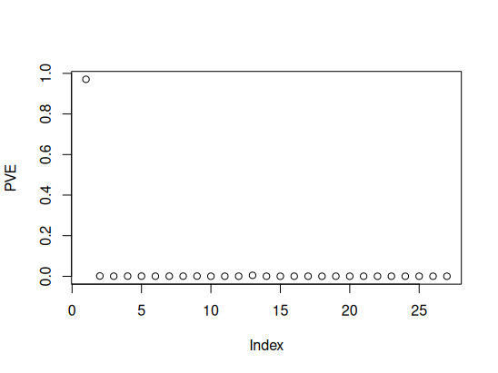
After removing the first factor. PVE was more evenly distributed.
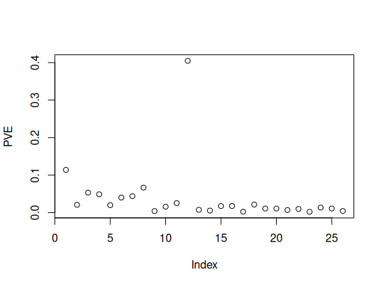
Each factor was relatively independent of each other. Correlation heatmap of factors and loadings for NTC samples were shown below:.
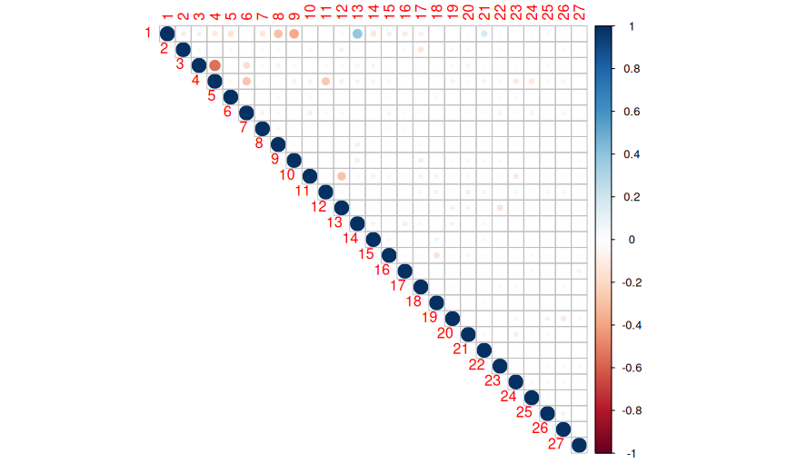
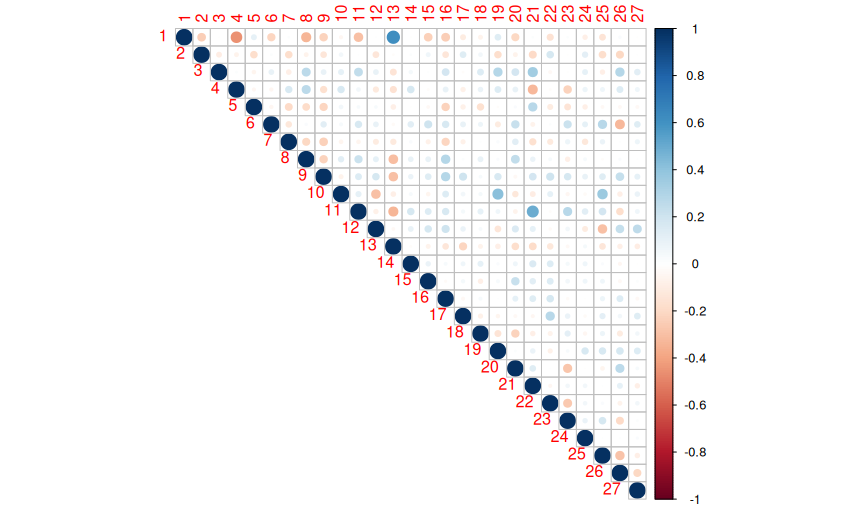
Loadings of the NTC samples were balanced across different levels of batches:
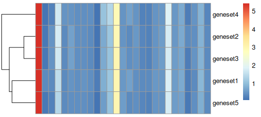
However, when we look at the loading difference between perturbation and NTC within each gene sets. There are five factors capturing the overall perturbation effect shift for each gene sets. Perhaps the MOI or treatment efficiency was different for each gene set?
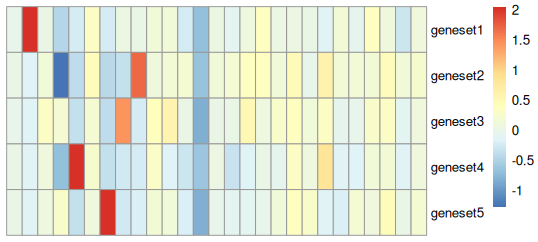
After obtaining the sample loading from matrix factorization and
removing the six factor pointing to technical variations, we first
normalized the usage across programs such that the usage for each sample
sums up to one. And then we standardize the usage across samples such
that it has mean=0 and std=1. Finally, we regressed all the perturbation
on the loadings for each program with the following formula in
lm:
\[ loading \sim perturbation \]
The perturbation was encoded as a categorical variable with the non-targeting control (NTC) as the reference. Pooling all the perturbation improved the estimation of batch effects and the loadings in NTC samples. The coefficients of perturbation indicate the change of program activity caused by the perturbation.
Since the sample loading follows exponential distribution, nominal P values from OLS is probably not calibrated. Therefore, we permuted the samples within each culture batch 10,000 times to generate a null distribution of Z score. The Z scores of all perturbations for the same factor were pooled into one null distribution. And we compared the empirically observed Z score with the null Z score to obtain the permutaiton P values for each pair of factor and perturbation. Then we applied Benjamini-Hochberg FDR control on all the permutation P values. \(\beta\) with FDR<5% was determined as statistically significant. 54 perturbations has a significant association to at least one gene program. 20 factors were associated with at least one perturbation.
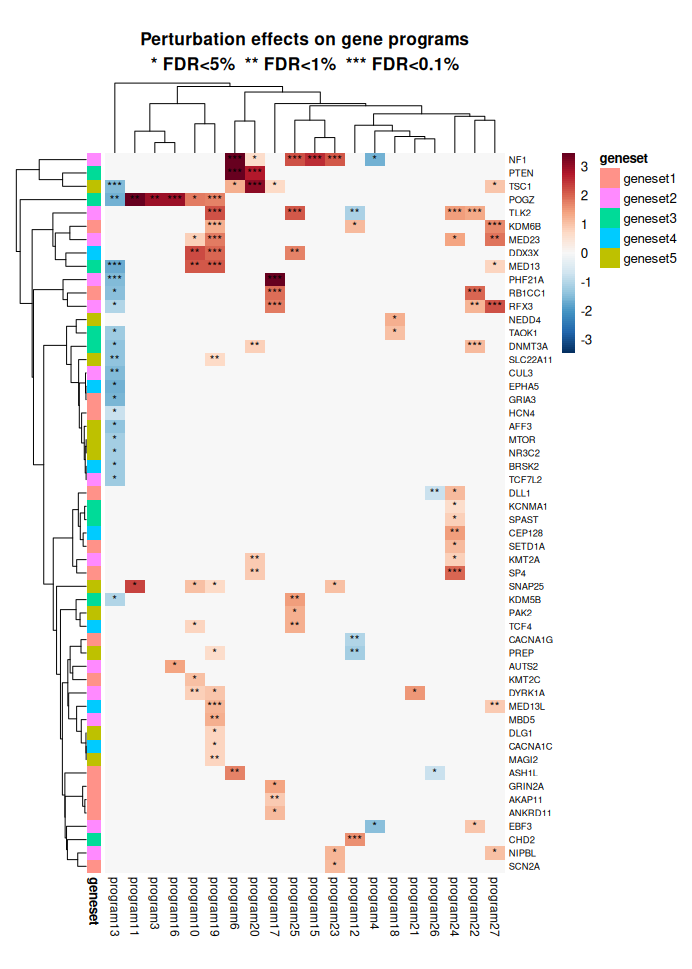
Some pathway convergence or complex convergence can be observed. For example, LoF of PTEN, TSC1, NF1 converged on factor 20 and factor 6. MED23 and MED13L converged on factor 19, 27, and 10.
The table of associations is shown below:
library(DT); library(dplyr)
Attaching package: 'dplyr'The following objects are masked from 'package:stats':
filter, lagThe following objects are masked from 'package:base':
intersect, setdiff, setequal, unionenr <- read.delim("data/batchrm_enrich_res.tsv", stringsAsFactors = FALSE)
assoc <- read.csv("data/flash_batchrm_sample_nonneg_beta_perm_assoc_res2.csv")
## ---- shared: program -> short theme label -------------------------------
themes <- tibble::tribble(
~k, ~theme,
3, "Translation / ribosome biogenesis up; differentiation down",
4, "Bioenergetics & translation vs neurite development",
6, "Glycolysis + proteotoxic stress + p53",
10, "Epithelial (tight junction, keratinization) - likely artifact",
11, "Mitochondrial biogenesis (OXPHOS, mitoribosome, import)",
12, "Glutamate receptor signaling down",
13, "Secreted / olfactory / antimicrobial - likely low-expression noise",
14, "Tubulin folding down",
15, "Cholesterol biosynthesis down",
16, "Triglyceride catabolism up; adhesion down",
17, "Cell-cycle re-entry up; synapse assembly down",
18, "Glycolysis + ETC + tRNA charging up",
19, "Enhancer-dependent signal-responsive transcription down",
20, "HIF1 / glycolytic switch; cholesterol biosynthesis down",
22, "Interneuron differentiation & neuron remodeling up",
23, "RAC signaling down; remodeling up - partly non-neuronal",
24, "Glycolysis + S1P signaling up; adhesion down",
25, "Type-I interferon / MHC - likely transduction artifact",
26, "GABA & neuropeptide signaling down - weakly annotated",
27, "GABAergic transmission up; innervation & GPCR down")
## ---- Table 1: perturbation -> program associations -----------------------
t1 <- assoc %>%
mutate(pert = sub("^Loss_of_function", "", perturbation),
k = as.integer(sub("program", "", factor)),
dir = ifelse(b > 0, "up", "down")) %>%
left_join(themes, by = "k") %>%
arrange(q) %>%
select(pert, k, b, dir, z, p, q, theme)
datatable(t1, rownames = FALSE, filter = "top",
extensions = c("Buttons", "FixedHeader"),
colnames = c("Perturbation", "Program", "Beta", "Dir", "Z", "P", "q", "Program theme"),
options = list(pageLength = 25, scrollX = TRUE, fixedHeader = TRUE,
dom = "Bfrtip", buttons = c("copy", "csv", "excel"),
order = list(list(6, "asc")),
columnDefs = list(list(targets = 1:6, className = "dt-center"),
list(targets = 7, width = "300px"))),
caption = htmltools::tags$caption(
style = "caption-side: top; text-align: left; font-weight: 600;",
"Loss-of-function perturbation effects on gene programs (permutation test, BH-adjusted)")
) %>%
formatRound(c("b", "z"), 2) %>%
formatSignif(c("p", "q"), 3) %>%
formatStyle("b",
background = styleColorBar(c(-max(abs(t1$b)), max(abs(t1$b))), "#c6dbef"),
backgroundSize = "95% 60%", backgroundRepeat = "no-repeat",
backgroundPosition = "center") %>%
formatStyle("dir", color = styleEqual(c("up", "down"), c("#b2182b", "#2166ac")),
fontWeight = "bold") %>%
formatStyle("q", fontWeight = styleInterval(0.05, c("bold", "normal")))We applied SuSIE-based enrichment analysis
(singlecelljamboreeR::perform_gsea) to identify GO terms in
biological process (MsigDB-C5) and pathway curation except CGP
(MsigDB-C2)that can be mapped to the gene programs. The number of
credible sets is ten. Any GO terms with PIP>80% is deemed
significant.
REACTOME_CHOLESTEROL_BIOSYNTHESIS is negative on three independent factors (15: −0.046, 20: −0.070, 21: −0.020), and mTOR pathway genes (PTEN, TSC1) load positively on two of them.
Program 15 is only enriched for REACTOME_CHOLESTEROL_BIOSYNTHESIS. Its upstream LoF targets were NF1 and PTEN.
Program 20 is down-regulated cholesterol biosynthesis combined with upregulated HIF pathway activites. These two biological processes are antagonistic. In response to hypoxia, HIF shuts down energy expensive sterol synthesis and upregulating glycotic enzymes to boost anaerobic ATP production. Hence program 20 reflects the coordinated switch between cholestorel synthesis and glycosis. Its upstream LoF targets were TSC1 and PTEN.
Program 11 clearly represents mitochondria activity. Mitoribosome, respiratory chain, complex assembly, and import machinery moving together is mitochondrial biogenesis, not a generic metabolic term. POGZ +3.3 is the driving perturbation — POGZ loss increases mitochondrial biogenesis. Program 21 shows the same signature (OXPHOS, CIII and CIV assembly, mito translation) coupled to cytoplasmic ribosomes and translation elongation, but with no perturbation hits, so that one is probably a metabolic-maturation state axis rather than a perturbation response.
Program 4 captured a wide-spread expression pattern that were negatively associated with 7 LoF targets. The upregulated processes represent neuron differentiation. Its down-regulated processes grouped mitochondria activity (TCA cycle) with protein biosynthesis. The program probably represents the differentiation vs. growth axis. LoF of the 7 genes may make cells less mature as neurons.
We tried to infer the perturbations’ effects on transcriptome by
integrating out the 21 factors in between. To avoid noise estimates with
high mean and high variance of the associations, we first used
ashr to shrink the associations from perturbations to
factors, such that noisy estimates will be heavily shrunk to zero and
have minimal transcriptomic effects. Considering that positive effects
have larger scales than negative effects, we used
halfuniform for modeling the mixture. The resulting local
false sign rates (LFSR) is more stringent than Storey’s Pi1. But these
two metrics mostly agree at 5% threshold:
| qvalue / LFSR | TRUE | FALSE |
|---|---|---|
| TRUE | 2207 | 2 |
| FALSE | 8 | 30 |
At 20% threshold, qvalue includes 50% more significant hits:
| qvalue / LFSR | TRUE | FALSE |
|---|---|---|
| TRUE | 2166 | 0 |
| FALSE | 27 | 54 |
Below is a heatmap showing all the posterior mean of coefficients from perturbations to programs.
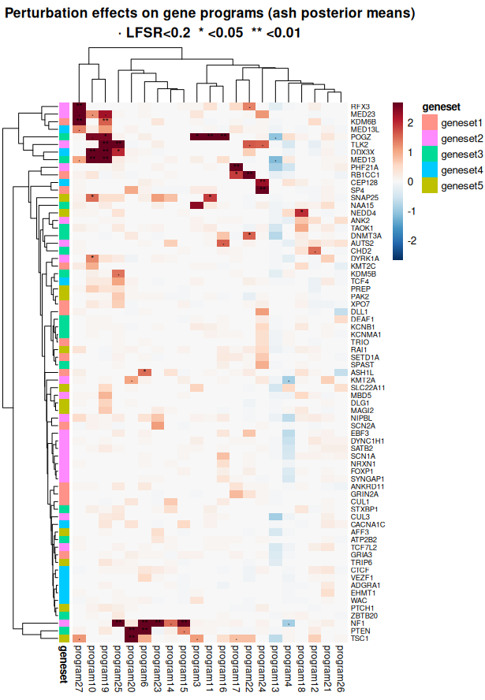
Assuming independence between each association, we integrated out the factors to obtain the mean and variance of gene-level effects:
\[ E = B*F \]
where \(E\) is the 107x20107 matrix of gene-level effects, \(B\) is the 107x21 matrix of association effects, and \(F\) is the 21x20107 matrix of gene loadings.
\[ Var(E) = B^2 * Var(F) + Var(B)*F^2 + Var(B)Var(F) \]
Note that the estimate of variance assumes independence across every associations and factors.
We only used the mean effect estimate to evaluate the correlation with MAST results Christina provided. And we only computed Pearson correlation with MAST DEGs (adjusted P values< 0.05). The LoF targets with negative correlations were EPHA5, FOXP2, and PDE4D, none of which has any significant associations with any factors.
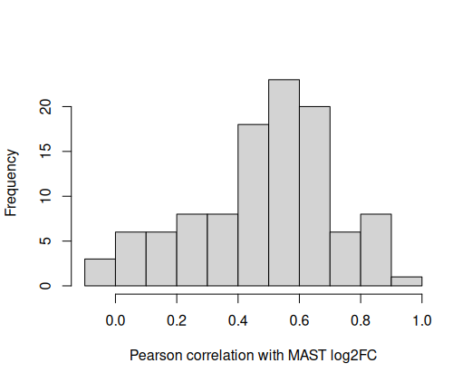
However, we found that MAST has a proportion of perturbations that results in the direct target genes with positive log fold change. Hence, we also ran pseudobulk differential analysis with dream. Turns out both approaches have very similar target gene log fold change. The four LoF targets with log fold change > 0.5 in dream is SP4, PHF21A, CHD2, and MEF2C.
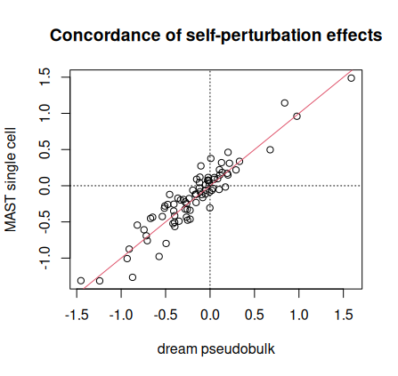
We also compared Pearson correlation with the log fold change from dream. Since dream has much fewer DEGs compared MAST, we used the threshold FDR<20% to filter DEG and only run correlation on perturbations with more than 10 DEGs. The resulting correlation distribution was similar to that of MAST:
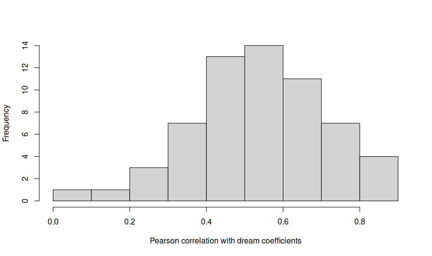
This median correlation was ~0.55 with different approaches of DEG analysis showed that the gene-level effect has captured real signals of perturbation with 21 factors.
sessionInfo()R version 4.6.1 (2026-06-24)
Platform: aarch64-apple-darwin23
Running under: macOS Sequoia 15.7.7
Matrix products: default
BLAS: /System/Library/Frameworks/Accelerate.framework/Versions/A/Frameworks/vecLib.framework/Versions/A/libBLAS.dylib
LAPACK: /Library/Frameworks/R.framework/Versions/4.6/Resources/lib/libRlapack.dylib; LAPACK version 3.12.1
locale:
[1] en_US.UTF-8/en_US.UTF-8/en_US.UTF-8/C/en_US.UTF-8/en_US.UTF-8
time zone: America/Chicago
tzcode source: internal
attached base packages:
[1] stats graphics grDevices utils datasets methods base
other attached packages:
[1] dplyr_1.2.1 DT_0.34.0 workflowr_1.7.2
loaded via a namespace (and not attached):
[1] jsonlite_2.0.0 compiler_4.6.1 promises_1.5.0 tidyselect_1.2.1
[5] Rcpp_1.1.2 stringr_1.6.0 git2r_0.36.2 callr_3.8.0
[9] later_1.4.8 jquerylib_0.1.4 yaml_2.3.12 fastmap_1.2.0
[13] R6_2.6.1 generics_0.1.4 knitr_1.51 htmlwidgets_1.6.4
[17] tibble_3.3.1 rprojroot_2.1.1 bslib_0.12.0 pillar_1.11.1
[21] rlang_1.3.0 cachem_1.1.0 stringi_1.8.9 httpuv_1.6.17
[25] xfun_0.60 getPass_0.2-4 fs_2.1.0 sass_0.4.10
[29] otel_0.2.0 cli_3.6.6 withr_3.0.3 magrittr_2.0.5
[33] crosstalk_1.2.2 digest_0.6.39 processx_3.9.0 rstudioapi_0.19.0
[37] lifecycle_1.0.5 vctrs_0.7.3 evaluate_1.0.5 glue_1.8.1
[41] whisker_0.4.1 rmarkdown_2.31 httr_1.4.8 tools_4.6.1
[45] pkgconfig_2.0.3 htmltools_0.5.9